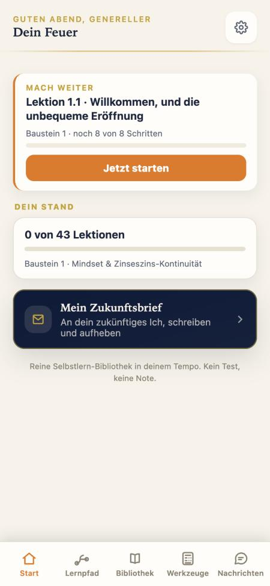
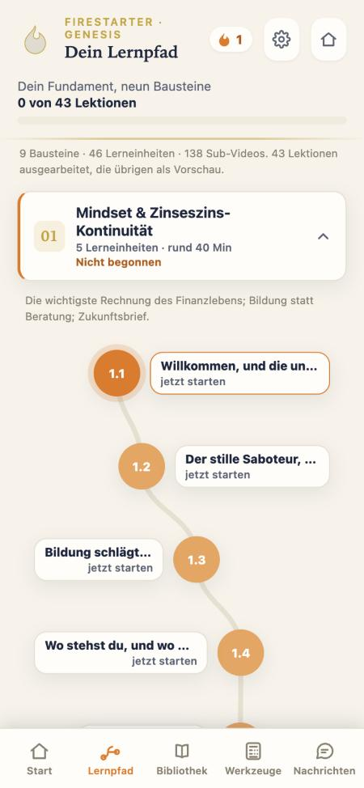
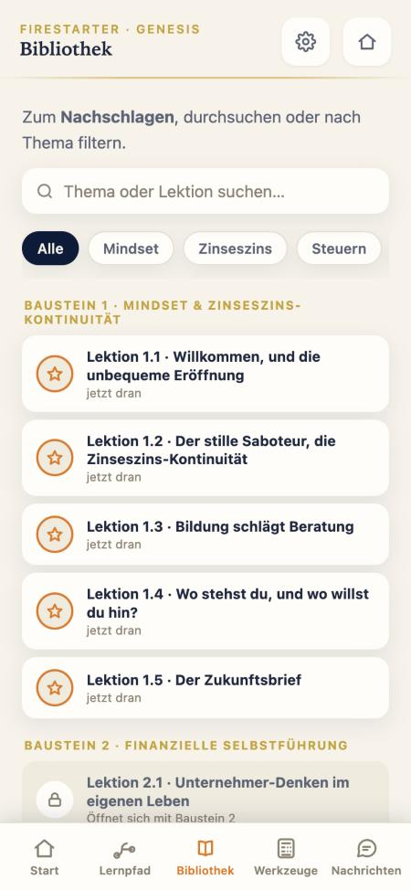
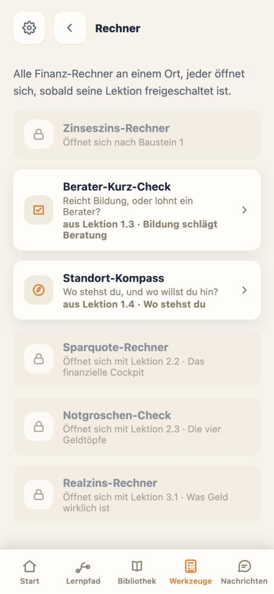

R&F Firestarter · Innenoptik · Entscheidungsvorlage · 21.10.2026
Firestarter innen: drei Richtungen
Der Login (Stand 2) ist abgenommen. Jetzt die Screens dahinter. Unten zuerst der heutige Stand, fünf echte Aufnahmen aus der lokalen Vorschau, dann drei Richtungen mit je drei Screens: Start, Lernpfad, Lektion. Alle drei tragen Kopf, Zickzack, Flamme und Schriften aus dem Login. Welt-Umschaltung färbt alle Mockups.
IstHeute innen, lokale Vorschau bei 375 px
Start
Lernpfad

Bibliothek

Werkzeuge

Lektion
Was schon stimmt: Creme-Grund, warme Töne, der Lernpfad als Weg, „Mach weiter" als erste Karte, Bottom-Nav mit fünf Reitern.
Was alt wirkt: Jede Fläche ist eine Karte mit Rand, drei Überschriftenstile nebeneinander (Serif, fette Sans, goldene Mono-Labels), Gold, Orange und Navy konkurrieren, dünne Fortschrittsbalken, kleine Chips, viel Text in kleinen Graden.
Was fehlt gegenüber dem Login: der Kopf mit Zickzack, die Flamme, eine große ruhige Begrüßung, eine Akzentfarbe statt drei, Luft.
Was die Vorbilder tun: Kopf mit Begrüßung, eine Tageskarte mit drei Zahlen, Kacheln mit Icon und Zahl, Listenkarten mit Bild, eine Farbe trägt (@dailyflutterui Farm App 205 K, Settings UI 116 K, Finance App „premium").
ADer Weg
Du bist hier.Der Lernpfad ist das Zuhause. Die Flamme steht an deiner Etappe, der nächste Schritt ist immer sichtbar.
Start
Guten Abend
Schön, dass du da bist, Simon.
1/8
Weiter beiLektion 1.1 · WillkommenBaustein 1 · noch 7 Schritte · 6 Min
Weiter
Dein Weg
1
Mindset & Zinseszins5 Lerneinheiten · 40 Min · du bist hier
2
Finanzielle Selbstführung27 Schritte · öffnet sich nach Baustein 1
3
Investment ohne Fehler32 Schritte
4
Börsenfundament79 Schritte
Kopf wie im Login, eine Weiter-Karte mit Ring, darunter der Weg mit der Flamme an deiner Etappe.
Lernpfad · Baustein 1
Baustein 1 · 5 Lerneinheiten
Mindset & Zinseszins
Die wichtigste Rechnung des Finanzlebens. Bildung statt Beratung. Dein Zukunftsbrief.
1.1
Willkommen, und die unbequeme Eröffnung8 Schritte · 6 Min · jetzt
1.2
Der stille Saboteur7 Schritte · 8 Min
1.3
Bildung schlägt Beratung6 Schritte · 7 Min
1.4
Wo stehst du, und wo willst du hin?9 Schritte · 10 Min
1.5
Der Zukunftsbrief5 Schritte · 9 Min
Lektion 1.1 starten
Ein Baustein, fünf Etappen untereinander, Nummern groß, Zeit je Lektion, ein Knopf.
Lektion 1.1
Lektion 1.1 · Schritt 2 von 8
Video · 3:40
Der Funke gehört dir
Stell dir ein Lagerfeuer in der Dämmerung vor. Du könntest warten, bis jemand vorbeikommt und es anzündet. Oder du nimmst selbst ein Streichholz.
Was trifft auf dich zu?
Ich habe schon mal einen Finanzrat bekommen, der mir nicht gut tat.
Ich habe noch nie mit jemandem über Geld gesprochen.
Weiter
Oben nur die Schritte, dann Video, Titel, Text, eine Frage, ein Knopf. Keine Reiterleiste.
StärkenDer nächste Schritt ist nie zu übersehen. Die Flamme hat einen festen Platz. Ähnlich dem heutigen Lernpfad, aber ruhiger, ohne Karten in Karten.
Risiko bei 40 bis 70Wer den Weg schon kennt, scrollt jeden Tag an derselben Liste vorbei. Zu viel Duolingo-Gefühl, wenn der Weg zu verspielt wird.
VorbilderDuolingo-Pfad (Prinzip, nicht Optik), Headspace-Kurse, der heutige Firestarter-Lernpfad.
BDas Dashboard
Auf einen Blick.Kacheln wie in den Flutter-Showcases: eine große Weiter-Kachel, kleine Kacheln für Wochenziel, Serie, Zeit. Die Bausteine als Karten zum Wischen.
Start
Bausteine
Guten Abend, Simon
Dein Feuer
Weiter bei
Lektion 1.1
Willkommen, und die unbequeme Eröffnung · 6 MinJetzt weiter
Wochenziel
2/5
noch 3 LektionenSerie
4 Tage
länger als je zuvorHeute gelernt
12 Min
von 15 geplantStand
3 / 43
Lektionen fertig01
Mindset & Zinseszins2 von 502
Finanzielle Selbstführunggesperrt03
Investment ohne FehlergesperrtVier Zahlen auf einen Blick, die große Kachel ist die Hauptaktion, Bausteine zum Wischen, Navigation als Pille.
Lernpfad · Bausteine
Dein Fundament
9 Bausteine
2/5
Baustein 1 · im Gang
Mindset & Zinseszins
02
Selbstführung27 Schritte03
Investment32 Schritte04
Börsenfundament79 Schritte05
Steuern35 Schritte06
Infrastruktur6 Schritte07
Treibstoff34 SchritteDer laufende Baustein groß, die übrigen als Kacheln mit Serif-Nummer.
Lektion 1.1
Baustein 1 · Lektion 1.1
Der Funke gehört dir
VideoLektionAufgabeAnker
3:40
Schritt
2 / 8
Dauer
6 Min
Stell dir ein Lagerfeuer in der Dämmerung vor. Du könntest warten, bis jemand vorbeikommt und es anzündet. Oder du nimmst selbst ein Streichholz.
Weiter zur Aufgabe
Reiter als Chips wie heute, aber Video zuerst, zwei Zahlenkacheln, dann Text.
StärkenAm nächsten an den Showcases, die Simon gefallen. Zahlen und Fortschritt sofort sichtbar, wirkt „App", nicht „Kurs".
Risiko bei 40 bis 70Zahlenkacheln können Druck machen (Serie, Minuten). Zu viele Kacheln werden zur Wand. Streak-Druck widerspricht „ermutigend", deshalb Serie nur als Zahl ohne Verlust-Drohung.
Vorbilder@dailyflutterui Farm App (Tageskarte mit drei Zahlen, Kategorien-Kacheln), Apple Fitness (Ringe), Finanz-Apps mit Bento-Dashboard.
CDas Magazin
Ruhig lesen.Kaum Karten, große Serif-Überschriften, Linien statt Rahmen, Zahlen in Serif. Wie die Präsenz-Ladder und die Flyer, nur als App.
Start
Guten Abend, Simon
Dein Fundament
Weiter bei · Baustein 1
Willkommen, und die unbequeme Eröffnung
Lektion 1.1 · Schritt 2 von 8 · 6 MinWeiterlesen
01
Mindset & Zinseszins-Kontinuität2 von 5 Lerneinheiten
02
Finanzielle Selbstführungöffnet sich nach Baustein 1
03
Investment ohne Fehler32 Schritte
04
Börsenfundament79 Schritte
Kein farbiger Kopf, eine große Weiter-Fläche mit Flamme, darunter ein Inhaltsverzeichnis mit Serif-Nummern.
Lernpfad · Baustein 1
Baustein 1 · 40 Min
Mindset & Zinseszins
Die wichtigste Rechnung des Finanzlebens. Bildung statt Beratung. Dein Zukunftsbrief.
1.1
Willkommen, und die unbequeme Eröffnung6 Min · jetzt dran
1.2
Der stille Saboteur8 Min
1.3
Bildung schlägt Beratung7 Min
1.4
Wo stehst du, und wo willst du hin?10 Min
1.5
Der Zukunftsbrief9 Min
Lektion 1.1 fortsetzen
Wie ein Inhaltsverzeichnis: Nummer, Titel, Dauer, kleiner Ring. Keine Karten.
Lektion 1.1
Lektion 1.1 · Schritt 2 von 8
Der Funke gehört dir
Worum es hier wirklich geht.
Video · 3:40
Stell dir ein Lagerfeuer in der Dämmerung vor. Du könntest warten, bis jemand vorbeikommt und es dir anzündet. Oder du nimmst selbst ein Streichholz und schlägst deinen eigenen Funken. Genau darum geht es: dass du den Funken schlägst. Nicht eine Bank.
Weiter
Lesemodus: große Serif-Überschrift, Initial, Video im Text, ein Knopf. Nichts lenkt ab.
StärkenAm nächsten an der R&F-Handschrift der Drucksachen (Gloock, Linien, Zahlen in Serif). Wirkt erwachsen und ruhig, gut für lange Texte und 40 bis 70.
Risiko bei 40 bis 70Weniger „App"-Gefühl, Fortschritt ist leiser. Die Flamme wirkt hier fremder, braucht einen festen Platz (Weiter-Fläche). Ohne Bilder wird es schnell nüchtern, das Gegenteil von ermutigend.
VorbilderPräsenz-Ladder und Flyer von R&F, Lese-Apps, Headspace-Textlektionen, Apple-News-Typografie.
RWas die Recherche hergibt
TikTok selbst per Browser ausgewertet (@dailyflutterui, 172 Videos, 24 davon zu Dashboard, Settings, Profil, Finanz-App). Web und YouTube durch einen Sonnet-Rechercheur; YouTube nur über Titel belegt, App-Screens über Textbeschreibungen (screensdesign.com), nicht als Bilder. Zahlen von Duolingo sind Eigenauskunft.
Eine große Weiter-Karte zuerst. Babbels Lernende wollten laut Babbel einen klareren Pfad und Richtung für den nächsten Schritt. Babbel läuft in Orange auf Beige, die engste Parallele zu unserem Login. babbel.com/en/magazine/course-overview-update
Fortschritt von Anfang an sichtbar, als Ring oder Balken, erster Schritt vorbefüllt (Goal-Gradient-Effekt, teilbelegt). Babbel zeigt einen Fortschrittskreis, Brilliant einen gelben Kreis auf Weiß.
Für 60 plus gelten zwei Regeln: vereinfachen und Bedienelemente größer mit Abstand, Symbol plus Text, wenige Wege (Systematische Übersicht über 40 Usability-Studien). pmc.ncbi.nlm.nih.gov/articles/PMC10557006
Navigation unten, sichtbar, 3 bis 5 Ziele mit Text, kein Hamburger-Menü (NN/g, Material 3). Heute haben wir fünf Reiter, das passt.
Serie nur mit niedriger Hürde und Gnadenfrist. Duolingo: eine Lektion verlängert die Serie, mehr Lerner blieben auf Serie. Smashing Magazine und Decision Lab warnen vor Zwang durch Verlustangst. Für Geldunsichere heißt das: Zahl ja, Drohung nie.
Der Pfad braucht Dosierung. Duolingos Pfad löste den Candy-Crush-Vergleich aus (NBC, teilbelegt); Babbel löst dasselbe mit Karten. Darum ist Richtung A ruhig gezeichnet, ohne Spielwelt.
Lektion: Video zuerst, Text und Notizen darunter, am Ende ein fester Weiter-Knopf (Coursera, Khan Academy). Feier nur an echten Meilensteinen, mit Figur und einem Knopf (Duolingo-Meilenstein, Khan, Brilliant).
Gamification wirkt nur klein (Meta-Analyse Sailer und Homner 2020, Effekte g 0,25 bis 0,49). Kompetenzgefühl und Sofort-Feedback vor Punkten und Ranglisten. Bei 50 plus steigerte Gamification Kompetenz und Autonomie, am höchsten bewertet: Sofort-Feedback, kleine Aufgaben, Meilensteine.
TikTok-Showcases (@dailyflutterui): Kopf mit Begrüßung, eine Tageskarte mit drei Zahlen, Kategorien als Kacheln mit Icon und Zahl, Listenkarten mit Bild, Settings als Zeilen mit Schaltern. Farm App 205 K, Settings 116 K und 102 K, Travel 155 K, Level-Up 27 K.
Figur: Headspace arbeitet mit weichen Figuren ohne Kanten und Symbolen statt Realismus. Der Funke passt in diese Linie. Apple-Ringe nicht nachbauen, sie sind geschützt.
Offen aus der Recherche: feste Reihenfolge der 9 Bausteine oder Wahlfreiheit (NN/g nennt Wahlfreiheit als Motivationsquelle) · Rolle von Gold innen · Serif-Überschriften in Richtung C gegen die Regel „Gloock nur für die Wortmarke" (E2).
→Wie es weitergeht
Empfehlung: B als Grundgerüst (Kopf mit Zickzack, große Weiter-Kachel, Zahlen auf einen Blick), mit dem Weg aus A als zweitem Reiter und dem Lesemodus aus C in der Lektion. So trägt jeder Screen das, was er leisten muss: Start zeigt den Stand, der Weg zeigt die Strecke, die Lektion lässt lesen. Serie und Minuten nur als Zahl, nie als Drohung.
Nächster Schritt: Simon wählt eine Richtung oder die Mischung, dann kommt für den Start-Screen die Markierungsseite mit Reglern, Stand 1, Stand 2, bis es passt. Danach Lernpfad und Lektion auf dieselbe Weise, am Ende eine klickbare Handy-Fassung unter dem teilbaren Link.